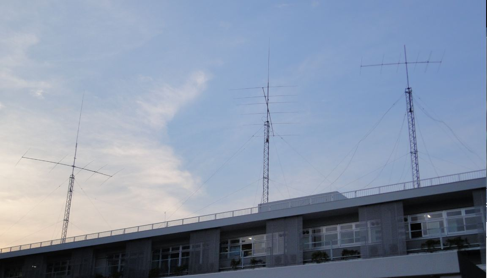

|
||
|
〒153-8902 東京都目黒区駒場3-8-1 東京大学学生会館 310
〒113-8654 東京都文京区本郷7-3-1 生協第二食堂3階2号室 |
||
| 当クラブの無線設備
当クラブは、3年生以上が通う本郷キャンパス（文京区本郷）にJA1YWX、 1,2年生全員と一部の学部・大学院生が通う駒場キャンパス（目黒区駒場）にJA1ZLOと、2つの社団局を持ち、各々活動しています。駒場キャンパスのJA1ZLOが活動の中心であり、最大空中線電力1kWが免許されており、1.9MHzから2400MHzまで運用することが可能です。  右から順に |
|
このサイトは、東京大学アマチュア無線部が管理しています。
このサイトに関するお問い合わせは、 master@ja1zlo.u-tokyo.org へどうぞ それぞれのページに関するお問い合わせは、それぞれのページに表示されている問い合わせ先へどうぞ。 All Rights Reserved, Copyright (c) 2002-2011 The University of Tokyo Amateur Radio Club |